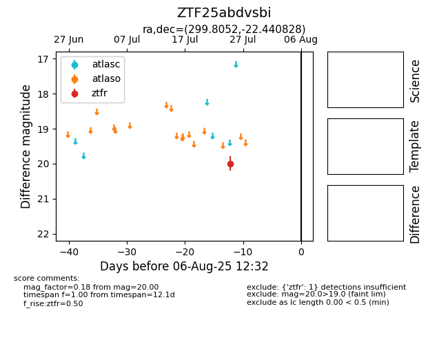

Target ZTF25abdvsbi at 2025-08-06 17:27, see:
FINK: fink-portal.org/ZTF25abdvsbi
Lasair: lasair-ztf.lsst.ac.uk/objects/ZTF25abdvsbi
ALeRCE: alerce.online/object/ZTF25abdvsbi
alt names
ZTF25abdvsbi (ztf,fink)
coordinates:
equatorial (ra, dec) = (299.8052,-22.44083)
galactic (l, b) = (19.1485,-24.44502)
photometry
last ztfr=20.00
1 ztfr detections
